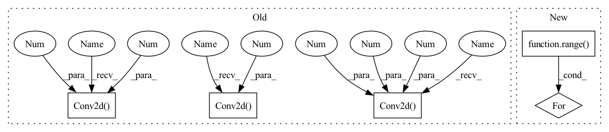

Pattern ID :942

Before Change
nn.Conv2d(3, 64, 5, stride=2, padding=2), nn.LeakyReLU(0.2)))
self.conv_blocks.append(
nn.Sequential(
nn.Conv2d(64, 128, 5, stride=2, padding=2),
nn.BatchNorm2d(128), nn.LeakyReLU(0.2)))
self.conv_blocks.append(
nn.Sequential(
nn.Conv2d(128, 256, 5, stride=2, padding=2),
nn.BatchNorm2d(256), nn.LeakyReLU(0.2)))
self.conv_blocks.append(
nn.Sequential(
nn.Conv2d(256, 512, 5, stride=2, padding=2),
nn.BatchNorm2d(512), nn.LeakyReLU(0.2)))
self.decision = nn.Sequential(nn.Linear(7 * 7 * 512, 1), nn.Sigmoid())
After Change
// build up downsampling backbone (excluding the output layer)
curr_channels = base_channels
for _ in range(self.num_downsamples):
self.conv_blocks.append(
ConvModule(
curr_channels,
curr_channels * 2,
In pattern: SUPERPATTERN
Frequency: 3
Non-data size: 5
Instances
Fragment ID: 3023678
Project Name: open-mmlab/mmgeneration
Commit Name: e6233adabc8816f01d309e057be20fae845cdd3c
Time: 2021-04-27
Author: yangyfaker@gmail.com
File Name: mmgen/models/architectures/lsgan/generator_discriminator.py
Class Name: LSGANDiscriminator
Method Name: __init__
Parent Class: nn.Module
Fragment ID: 3023726
Project Name: fire717/movenet.pytorch
Commit Name: 6eb59cd47bfde753530ed236335910bed9ba7c1d
Time: 2022-08-12
Author: fire15@126.com
File Name: lib/models/movenet_mobilenetv2.py
Class Name: InvertedResidual
Method Name: __init__
Parent Class: nn.Module
Fragment ID: 3023679
Project Name: open-mmlab/mmgeneration
Commit Name: e6233adabc8816f01d309e057be20fae845cdd3c
Time: 2021-04-27
Author: yangyfaker@gmail.com
File Name: mmgen/models/architectures/lsgan/generator_discriminator.py
Class Name: LSGANDiscriminator
Method Name: __init__
Parent Class: nn.Module
Fragment ID: 3023695
Project Name: coqui-ai/tts
Commit Name: c20a6b118555830d16437d294cc328f7e715fa32
Time: 2021-04-08
Author: rishikksh20@gmail.com
File Name: TTS/vocoder/models/multi_period_discriminator.py
Class Name: PeriodDiscriminator
Method Name: __init__
Parent Class: nn.Module